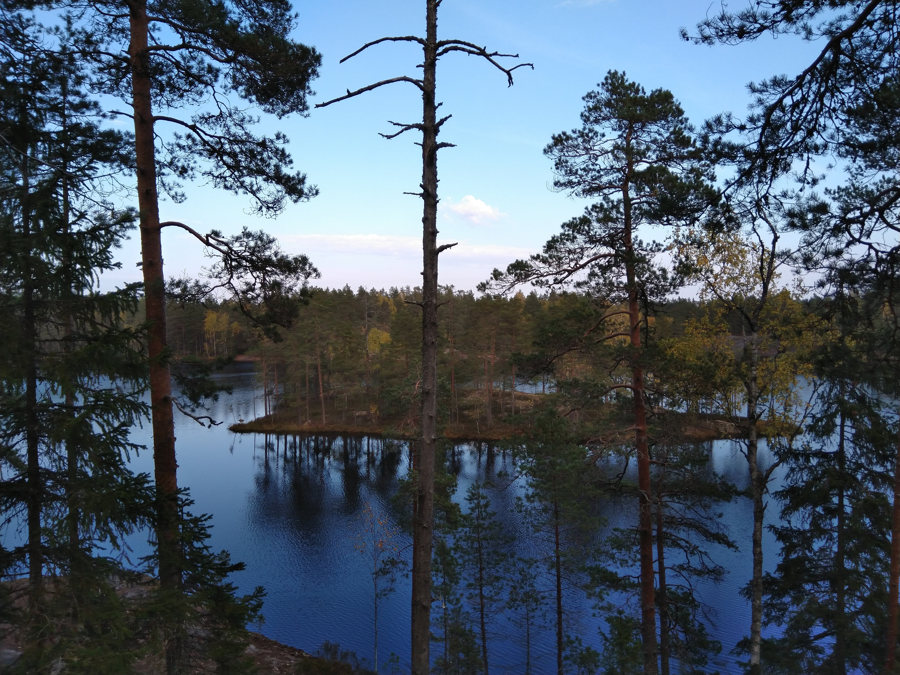

<!doctype html>
<html lang="en">
  <head>
    <title>Kansallispuistot</title>
    <link rel="stylesheet" href="./style.css" />
    <meta charset="UTF-8" />
    <meta name="viewport" content="width=device-width, initial-scale=1.0" />
  </head>
</html>
<title>Tuovin ensimmäinen html-sivu</title>
<link rel="stylesheet" href="./style.css" />
<!-- Tässä on viittaus ulkoiseen tyylitiedostoon, jonne kaikki tyylittelyt tulevat. -->
<meta charset="UTF-8" />
<meta name="viewport" content="width=device-width, initial-scale=1.0" />
<meta
  name="description"
  content="Tuovin ensimmäinen responsiivinen html-sivu"
/>
<body>
  <div>
    <div class="responsive-box">
      <!-- Tässä on yhdistetty responsiiviselle alueelle sivun otsikko-->
      <h1>Tervetuloa sivulle!</h1>
    </div>
  </div>
  <header>
    <h1>Retkeilystä kansallispuistoissa ja muista harrastuksistani</h1>
    <nav class="responsive-nav">
      <button class="menu-toggle">☰ Menu</button>
      <ul class="nav-list">
        <li><a href="#">Koti</a></li>
        <li><a href="#">Retkeily</a></li>
        <li><a href="#">Kansallispuistot</a></li>
        <li><a href="#">Muut harrastukset</a></li>
        <li><a href="#">Kysy lisää</a></li>
      </ul>
    </nav>
  </header>
  
  <main>
    <section id="kansallispuistot">
      <h1>Kansallispuistoista</h1>
      <p>
        Kansallispuistot luonnonsuojelualueita luonnonsuojeluun, ulkoiluun ja
        retkeilyyn, luontoa kunnioittaen. Alla on muutama kuva eri
        kansallispuistoista, joissa olen useasti retkeillyt.
      </p>
    </section>
  </main>
  <div class="grid-container">
    <!--Tässä lohkossa on säiliö, joka koostuu kolmesta osasta, itemista ja kussakin on erilainen kuva, kuvien koko vaihtelee näytön koon mukaan.-->
    <div class="grid-item">
      <h3>Kiilopää</h3>
      
    </div>
    <div class="grid-item">
      <h3>Nuuksio ja Luukki</h3>
      
    </div>
    <div class="grid-item">
      <h3>Koli</h3>
      
    </div>
  </div>
  <div>
    <div id="Kansallispuistot"></div>
    <div class="animation-box">Kansallispuistot yheiset luontoaarteemme</div>
    <!--Tässä main osiossa on teksti, jossa on tyylittelyä ja mediaelementti, viittaus-->
    <blockquote cite="https://www.luontoon.fi/fi/artikkelit/kansallispuistot">
      Kansallispuistot ovat suuria luonnonsuojelualueita, joiden tehtävänä on
      säilyttää luonnon monimuotoisuus ja tarjota vierailijoille mahdollisuus
      nauttia luonnosta. Kansallispuistojen tärkein tehtävä on turvata luonnon
      monimuotoisuus. Kansallisesti ja kansainvälisesti arvokkaat
      kansallispuistot on perustettu lailla valtion alueille. Jokainen puisto
      edustaa tyypillistä suomalaista luontoa parhaimmillaan, aina tuntureilta
      saaristoon asti. Metsähallitus vastaa kaikkien Suomen kansallispuistojen
      hoidosta. Reitit on suunniteltu ja ylläpidetty niin, että ne ohjaavat
      kävijöitä kulkemaan luonnolle ystävällisellä tavalla. Tämä auttaa
      säilyttämään näiden alueiden ainutlaatuisuuden myös tuleville
      sukupolville.
    </blockquote>
  </div>
  <div class="flex-container">
    <!--Tässä osiossa on flex- asettelu, kolme kuvaa vierekkäin, joiden koko vaihtelee näytön koon mukaan-->
    <div class="box1">
      
    </div>
    <div class="box2">
      
    </div>
    <div class="box3">
      
    </div>
  </div>
  <div class="container">
    <div class="column">
      <p>
        Urho Kekkosen kansallispuisto on vuonna 1983 perustettu, Savukosken,
        Sodankylän ja Inarin kuntien alueella sijaitseva kansallispuisto.
        Puiston pinta-ala on 2 549 neliökilometriä, ja se on Suomen toiseksi
        suurin kansallispuisto. Se on myös Suomen toiseksi suosituin
        kansallispuisto. Vuonna 2025 puistossa kävi 424 900 kävijää.
        Kansallispuiston pohjoisen osan halki virtaa Suomujoki. Aluetta hoitaa
        Metsähallitus ja se on osa UK-puisto-Sompio-Kemihaara-Natura 2000
        -luonnonsuojelualuetta.
      </p>
    </div>
    <div class="column">
      <p>
        Kolin kansallispuisto on yksi tunnetuimmista Itä-Suomen luontokohteista
        ja nähtävyyksistä, ja Suomen tunnetuimpia kansallismaisemia.
        Kansallispuiston pinta-ala on 3 000 hehtaaria (30 km²), ja se sijaitsee
        Joensuun ja Lieksan kaupunkien sekä Kontiolahden kunnan alueella.
        Joensuussa sijaitseva osa kuului aiemmin Enon kuntaan. Kolin
        kansallispuisto on perustettu lailla 10. huhtikuuta 1991, ja sitä on
        laajennettu vuonna 1996. Kolin kansallispuisto oli vuonna 2025 Suomen
        neljänneksi suosituin kansallispuisto. Siellä kävi 224 000 kävijää.
      </p>
    </div>
  </div>
</body>
